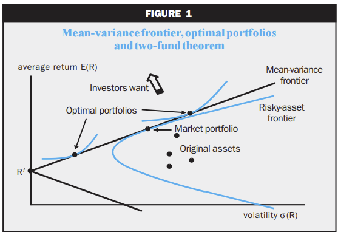

The Bloomberg Terminal#
Learning the Bloomberg Terminal is valuable for quantitative researchers in finance because it offers a wide range of financial data, analytics, and tools necessary for detailed financial analysis.
Although this class is centered around Python and the computing ecosystem that it lives in, it’s useful to
learn about how Bloomberg and the Bloomberg Excel Plug-In works. I assume you either have some basic knowledge
of the Bloomberg terminal or at least will find a full tutorial of the Terminal elsewhere. Here, I’ll just cover few of the basics. Then, we’ll discuss how to use the xbbg Python package to pull data from the Bloomberg Terminal via Python.
Inside the Terminal: A Few Key Functions#
The Bloomberg Terminal is an great tool in the field of finance, offering access to real-time financial data, news, and analytics. Understanding how to navigate and utilize its vast array of functions is useful for professionals and students alike. Here are just a few useful functions that may help getting started.
Research#
Pattern: Ticker, Type, Function
Entering Ticker and Ticker Type: Begin by entering the ticker symbol of the entity you’re interested in, followed by the function you wish to explore. The Bloomberg Terminal operates on a vast database of ticker symbols, representing various financial instruments and entities worldwide.
Once you’ve found the security or company that you’re interested in, there are a series of functions that act on that entry.
Financials:
FA(Financial Analysis). This function provides a comprehensive financial summary of the selected company, including income statements, balance sheets, cash flow statements, and ratios. It’s instrumental in conducting a deep dive into a company’s financial health.Company Filings:
CF(Company Filings Function). Access official company documents filed with regulatory bodies. This includes annual reports, quarterly earnings, and more. The function also provides the date of the next expected filing, which is crucial for keeping up with corporate disclosures.Earnings and Estimates:
ANR(Analyst Recommendations and Performance History). This feature offers insights into analyst ratings, including buy, hold, or sell recommendations, and tracks the performance history of these recommendations. It’s a valuable tool for gauging market sentiment and expectations.Comparative Analysis:
COMP(Compare). This function allows users to compare financial metrics and performance across different companies, offering a side-by-side analysis to identify relative strengths and weaknesses.Equity Research and Valuation:
EQRV. A tool for conducting equity research and valuation, offering a range of metrics and models to assess a company’s fair value.Bloomberg Intelligence:
BIorBICO(Bloomberg Intelligence). Access in-depth research and analysis provided by Bloomberg’s team of experts. This covers industry trends, competitive landscapes, and company-specific analyses.Supply Chain Analysis:
SPLC. This function provides insights into a company’s suppliers, customers, and competitors, offering a comprehensive view of its supply chain dynamics. It’s crucial for assessing risks and opportunities within the supply chain.Market Beta:
BETAFunction. Calculate the market beta of a security, providing insights into its volatility relative to the market. A higher beta indicates greater volatility and risk, while a lower beta suggests less risk.
Short Diversion to HW: CRSP Index and Fama-French Factors?#
Discussion
Use the crsptm1 index, which represents the “CRSP US Total Market Index”, as a benchmark in the BETA function. Why would we use this benchmark relative to the S&P500?
Discussion
Why again do we care about exposures to factors like HML or SMB?
The following figures are from the classic article, Cochrane (1999), “Portfolio advice for a multifactor world”

Charting and Data Visualization#
GP (Line Chart): Customize line charts by changing fields (e.g., from Last Price to others), adjusting periodicity (intraday vs. historical), and adding fundamentals like Price-to-Earnings ratios through the edit chart button.
GF (Graph Fundamentals): Visualize a company’s fundamental data through interactive graphs, enhancing your analysis with visual aids.
Some tips
Copying Charts: Right-click any chart to copy it into Word or PowerPoint for presentation purposes.
Data Sources: Click the data tab on any chart to review the underlying data sources, ensuring transparency and reliability.
Data Export#
Export Data to Excel: Seamlessly export data from the Bloomberg Terminal to Excel for further analysis, facilitating a flexible and efficient workflow.
The Bloomberg Excel Plugin#
The Bloomberg Excel Plugin allows users to extract real-time data, historical data, and financial analytics directly into Excel, streamlining the process of financial analysis and modeling. Here we’ll covers the basics of using the Bloomberg Excel Plugin, focusing on the essential functions: BDP (Bloomberg Data Point), BDH (Bloomberg Data History), BDS (Bloomberg Data Set), and the FLDS (Field Finder) tool.
Before you begin, ensure that the Bloomberg Excel Plugin is installed and activated in your Excel application. This plugin is available to Bloomberg Terminal subscribers and can be installed from the Bloomberg Terminal itself. Now, within excel,
the BDP, BDH, or BDS functions can be used as follows:
Steps:
Choose the cell where you want the historical data to begin.
Input the
BDH,BDH, orBDSformula with the security and other required fields (following the syntax below).Execute the command by pressing Enter.
BDP Bloomberg Data Point#
The BDP function retrieves real-time data for a specified security and data field.
Syntax: =BDP("Security Ticker", "Field")
Example: To get the last trading price of Apple Inc., you would use:
=BDP("AAPL US Equity", "px_last")
BDH Bloomberg Data History#
The BDH function is used to fetch historical data for a specific security over a given time range.
Syntax: =BDH("Security", "Field", "Start Date", "End Date")
Example: To obtain the market capitalization history of Uber Technologies Inc. from January 1, 2020, to December 9, 2020, you would use:
=BDH("UBER US Equity", "CUR_MKT_CAP", "01/01/2020", "12/09/2020")
BDS Bloomberg Data Set#
BDS retrieves a table of data for a given security and field, useful for more complex queries like obtaining a bond’s payment schedule.
Syntax: =BDS("Security", "Field")
Example: For the payment schedule of an Apple Inc. corporate bond, use:
=BDS("AAPL 4 05/10/28 Corp", "DES_CASH_FLOW")
Data Field Finder: FLDS#
Finding the correct field names for use with BDP, BDH, and BDS functions can be challenging. The FLDS function within Bloomberg Terminal assists in identifying the correct field names. Note that now a similar function is
available within the Bloomberg Excel Plugin:
Steps:
On the Bloomberg Excel toolbar, click the
Field Searchbutton.Enter the name of the security or a keyword related to the data you need.
Browse or search through the results to find the exact field name for your query.
Bloomberg via Python using xbbg#
Following the previous tutorial on using the Bloomberg Terminal’s Excel Plugin, we now turn our focus to achieving
similar outcomes using the xbbg Python package. The xbbg package allows users to interface with Bloomberg data directly from Python, offering a programmatic approach to data retrieval that can be particularly useful for in-depth data analysis, automation, and integration into Python-based financial models.
The xbbg Python package is a powerful tool for accessing Bloomberg data within a Python environment. It provides functionalities similar to the Bloomberg Excel Plugin, including real-time data (bdp), historical data (bdh), and bulk data (bds) queries. This tutorial will demonstrate how to use xbbg to fetch the same types of data as in the previous Excel-based examples.
Prerequisites
Before starting, ensure you have:
A Bloomberg Terminal subscription with API access.
Python installed on your machine.
The
xbbgpackage installed. If not, you can install it using pip:
pip install xbbg
Fetching Real-time Data with bdp#
Equivalent to the BDP function in Excel, bdp in xbbg retrieves real-time data for a specified security and field.
Example: To get the last trading price of Apple Inc., you would do:
from xbbg import blp
# Fetching the last trading price of Apple Inc.
last_price = blp.bdp(tickers='AAPL US Equity', flds='px_last')
print(last_price)
Fetching Historical Data with bdh#
Similar to the BDH function in Excel, bdh in xbbg is used for fetching historical data.
Example: To obtain the market capitalization history of Uber Technologies Inc. for the year 2020:
from xbbg import blp
# Historical market capitalization of Uber Technologies Inc.
mkt_cap_history = blp.bdh(
tickers='UBER US Equity',
flds='CUR_MKT_CAP',
start_date='2020-01-01',
end_date='2020-12-09'
)
print(mkt_cap_history)
Furthermore, here is another example with multiple securities:
from xbbg import blp
import pandas as pd
import datetime
TODAY = pd.to_datetime('today').normalize() - datetime.timedelta(days=1)
START_DATE = TODAY - datetime.timedelta(days=365)
df = blp.bdh(
# 3-Month SOFR Futures, Maturing in Sep and Dec 2024, resp.
tickers=['SFRU4 COMB Comdty', 'SFRZ4 COMB Comdty'],
flds=['PX_LAST',],
start_date=START_DATE,
end_date=TODAY
)
df
Fetching Bulk Data with bds#
The bds function is used for bulk queries, similar to the BDS function in Excel.
Example: For the payment schedule of an Apple Inc. corporate bond:
from xbbg import blp
# Payment schedule for an Apple Inc. corporate bond
payment_schedule = blp.bds(
tickers='AAPL Float 05/11/22 Corp',
flds='DES_CASH_FLOW'
)
# Doesn't work!!
print(payment_schedule)
Warning
I’ve had mixed success with xbbg. Sometimes, as you see above, the function returns nothing even if I know
it works in the Excel Plugin (as the one above does). Sometimes, it only works for certain date ranges, even though
I know those date ranges work in Excel.
Best Practices#
API Limitations: Be aware of Bloomberg’s API request limitations and manage your data queries accordingly to avoid exceeding your quota.
Error Handling: Implement error handling in your scripts to manage instances where data may not be available or requests fail.
Data Processing: Utilize pandas DataFrame functionalities for efficient data manipulation and analysis after retrieving data with
xbbg.